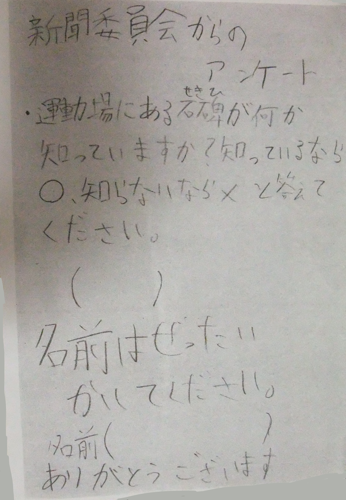
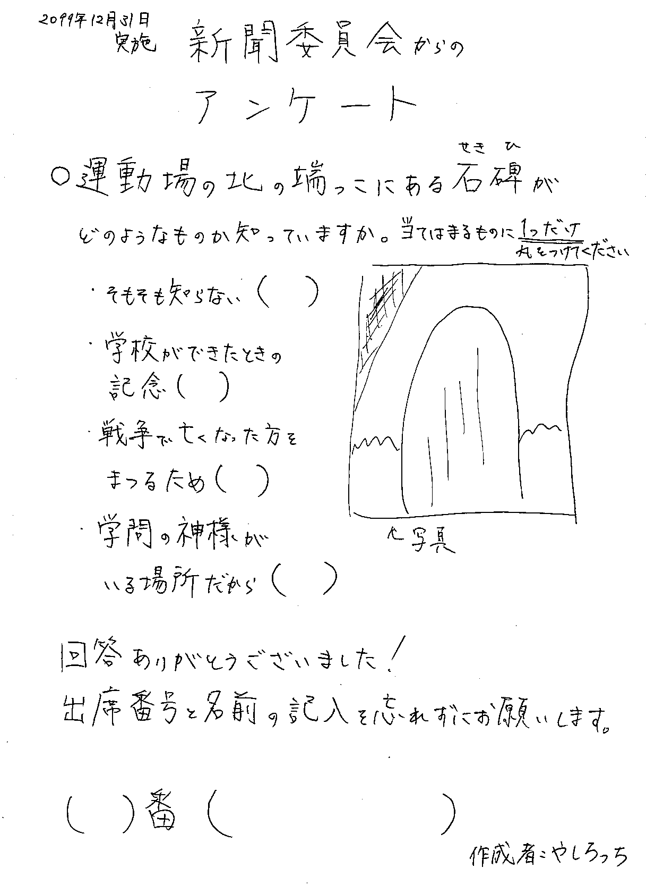

ウチ、新聞委員会だったんだわ。
2022.08.29
これを見ているということは、クイズに正解したんだね！
Congratulations🎉
話は変わるんだけど、タイトルにある通り、ウチ、新聞委員会だったんだわ。
6年生の後期ね📰
その時に作ったアンケートのクオリティーがすごいので、記録用に置いておきます。
ちなみに通常の投稿じゃなくてここに置いたのは、出身校がバレる可能性が少しですがあるからです。
お待たせしました！実際にやしろっちが作ったアンケートはコチラです↓
こちらは、内容はあまり変わりませんが、「今のウチならこうする」というのを軽く作りました。

こういうのは部活で鍛えられたわ。マジで。
色々あったけど、こういう能力が身に着いたことは良かった。
11月の引退まで頑張るぞ🔥
あと、写真の右側が曲がってるのは、スキャンするときにズレたとかじゃないから。
ウチの直線がこれなだけ。